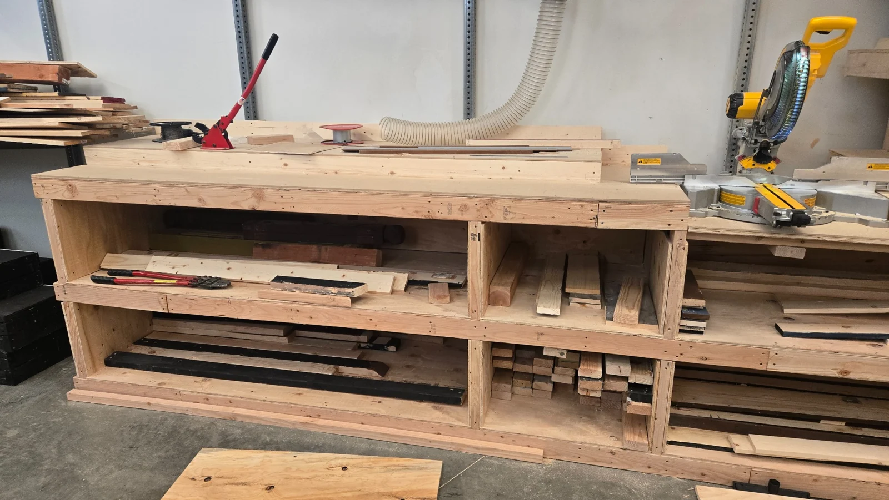

Fall 2026 · Year 3Rocket Nose Cone Aerodynamics

53–64% lower fitted drag coefficient vs. blunt reference
Eight nose profiles; SolidWorks CFD, wind-tunnel testing and analysis.
Explore project ↗Engineering portfolio / chronological view
From early hands-on projects to independent mechanical design and engineering analysis. Select a milestone to explore the evidence.
Hover over a dot or project name to preview the work. Click either to open the case study. On touchscreens, use + to preview.
53–64% lower fitted drag coefficient vs. blunt reference
Eight nose profiles; SolidWorks CFD, wind-tunnel testing and analysis.
Explore project ↗
Five technical MATLAB case studies
Numerical dynamics, stress analysis, data reduction and signal processing.
Explore project ↗
Print orientation change improved durability
Independent CAD, FEA and iterative FDM troubleshooting.
Explore project ↗
Eight physical components measured
Mechanical packaging and component integration for a multidisciplinary prototype.
Explore project ↗
30+ unique parts personally designed
Mechanical CAD, manual gantry concept and pneumatic claw development.
Explore project ↗
First place · team competition
Proposed the design approach, adapted it to project constraints, assisted fabrication and gathered test data.
Explore project ↗
18-foot workstation
Designed and built shop infrastructure and coordinated a fabrication team. Employment spanned multiple academic years.
Explore project ↗Multi-year employment is placed by its starting year; other milestones follow their documented semester or calendar year.